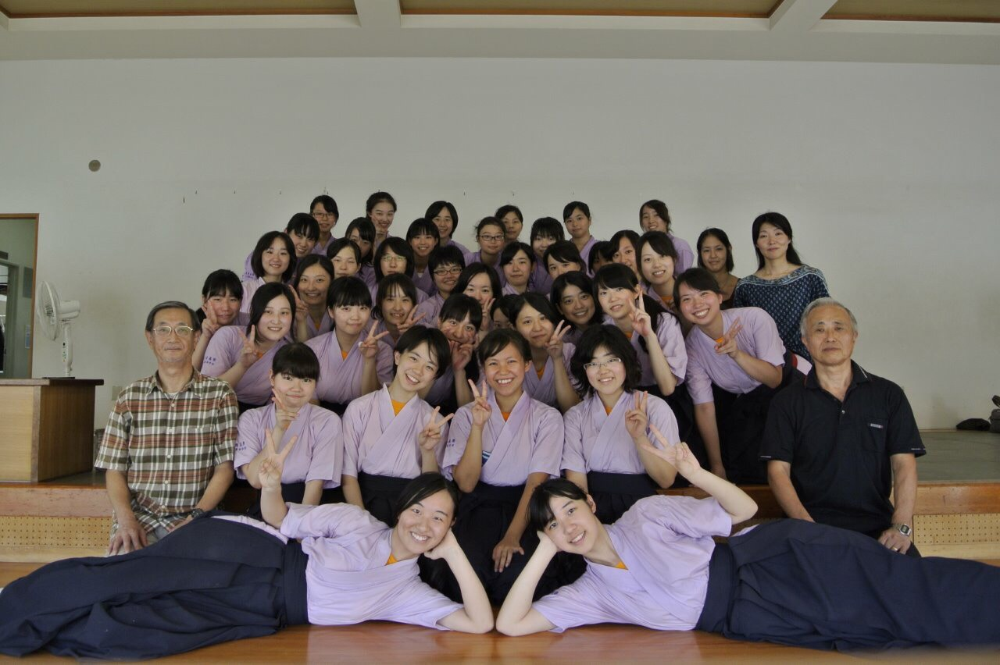

-

- 
-

ようこそ！
私達弓術部は、毎週火、水、金曜日の放課後に三田にある正己弓道場にて活動しています。
行事
夏合宿
今年は7/24(木)〜7/28(月),長野県白馬村やまいちみそらの弓道場にて合宿を行う予定です。
新入部員の多くはこの夏合宿で的前に立ち、たっぷり時間が取れるこの期間に多くの時間を練習につぎ込み、帰る頃には初日と比べて格段に上手くなって三田に帰ります。
全早慶
毎年夏に、早慶の高校生が集まって早慶戦を行っています。多い時には早慶それぞれ3校ずつ、合計6校集まるかなり大きな試合になります。
Copyright(C)2014 keio girls J.Archery club All Rights Reserved.